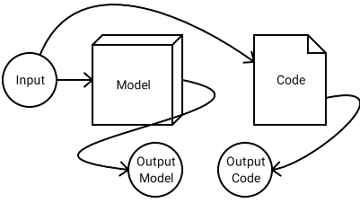
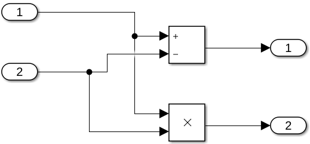
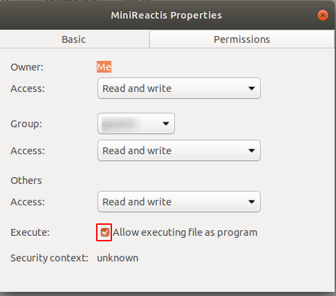
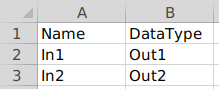
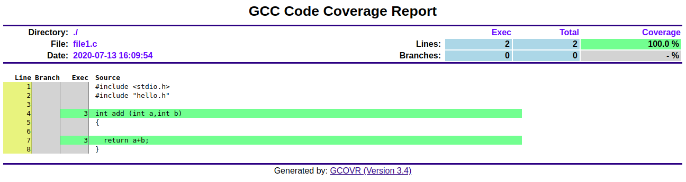
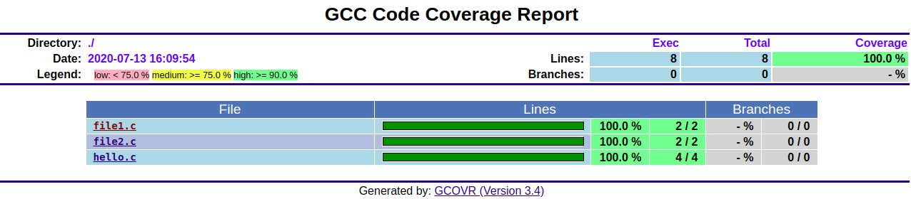
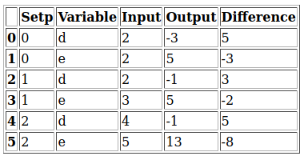

With MiniReactis , you can test embedded control systems in the SIL(Software in the loop) phase. Whether you create a simple module test or a complex system test: MiniReactis provides unique features to pass the multiple test cases through the model and the code, so that MiniReactis can provide you with a nice output of difference and coverage report.
Goal of the tool
The tools in particular helps in pass multiple test cases both in MATLAB Model and the C Code. It also aids in capturing the Model and Code outputs. And the final output would be the compression of model output and the code output, which is presented in as an HTML Report. Along with that a HTML code coverage report is also generated by the tool.

How to use the tool
This tutorial of using the tool is divided into two parts.
How to pass the inputs and capture the output in MATLAB Model.
How to pass the MATLAB output .csv to the C Code so that difference and coverage report is generated.
Example Model
For the sake of the tutorial a basic example model is taken. As shown in Fig.1

Fig.1 - Example Model.
Passing test cases and capturing output in MATLAB Model.
1.Keep the Model inside a Subsystem.
2.Write all the possible test cases for In1 and In2 in a .xls file.
3. Open a Signal Builder Block in Simulink.
4. Go to "Import from File" so that .xls create in step 2 can be loaded in Signal Builder.
5. Click on "Browse.."
6. Select .xls created in step 2.
7. Select as per the image shown. Then click on "Confirm Selection"
8. Finally connect the Signal Builder to the Model.
9.Click on this Link to download the M-Script. Then just run the M-Script.
10. Select the Simulink Model you created in step 8.
11. Fill the text as per your model and then press "ok".
The output of the above steps will be a final "output.csv". Will be used to pass in the Embedded C code.
Passing the Test Cases in the C Code.
The tool take in all dependent and header linked .c file as well. All of the .c files and .h file should be mention in one folder.
Follow the following steps
Download the tool from this Link.[Only works in Ubuntu now]
Then to make it executable by change the following property of the file.

Mention all the Input and Output variables datatype in a .csv file. For example :

Give all the info as show below. For a working example check this Link.
Running the tool online
Fork this git Repository. Then set the "GITHUB_TOKEN" for deploy of the report.
Fill all the data in "DataInput.csv" file. Same as the GUI.
Then it will automatically generate HTML Report by the Travis CI platform.
Output Reports
The coverage report shows if the test cases was sufficient to pass all the part of the code. Branch Coverage.


Difference Report is the HTML Report which will display allthe difference values in the variable. Difference mean the difference between the Model Output and the code output.
